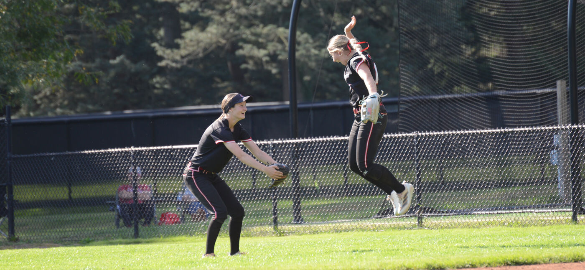
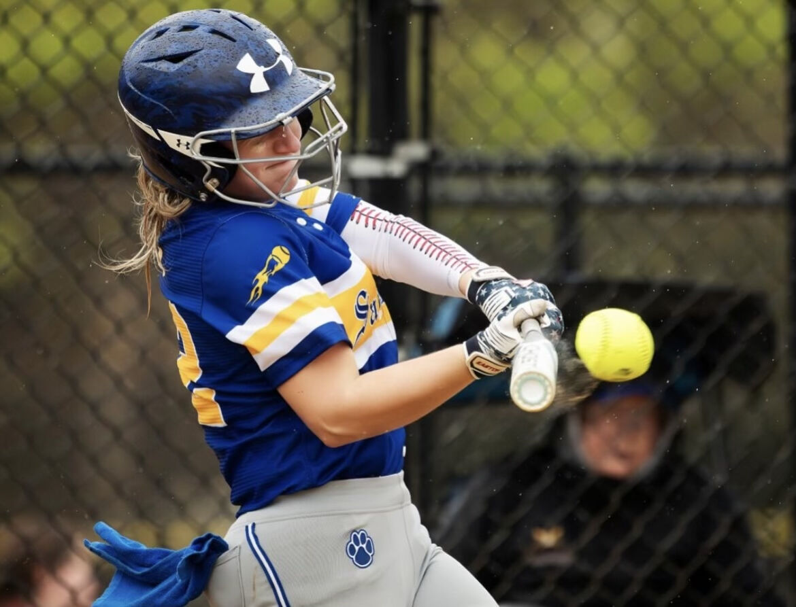
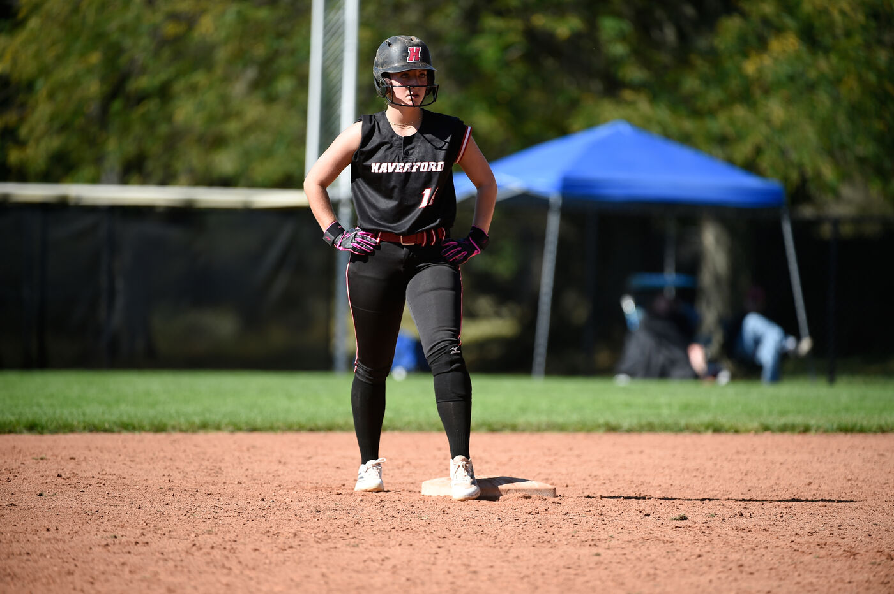
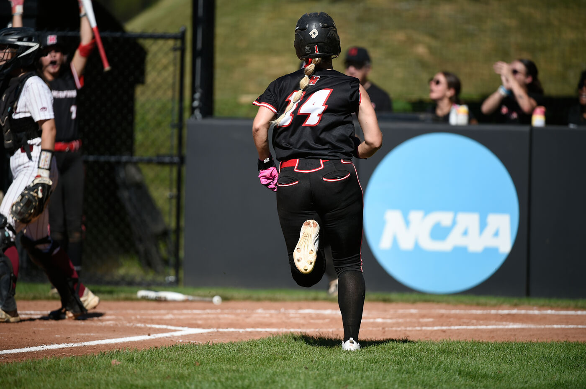

Economics · Haverford College ’29
Zoe Friedman
Economics student and varsity athlete building a career in finance.
- Education
- Haverford CollegeEconomics · Class of 2029
- Leadership
- FounderHaverford Private Equity & Venture Capital
- Athletics
- Varsity SoftballNFCA All-America Scholar Athlete
01About
Analytical, competitive, and team-first.
Zoe Friedman is an Economics student at Haverford College, Class of 2029, focused on building a career in finance. She founded Haverford Private Equity & Venture Capital and is a member of the Haverford Finance Initiative.
A graduate of The Spence School in New York, she also plays outfield for Haverford’s varsity softball team and was named an NFCA All-America Scholar Athlete in 2026. She brings the same competitiveness and team-first approach to the classroom and to every initiative she takes on. Beyond finance and athletics, Zoe is committed to women’s empowerment and youth advocacy, with roles at Strong Girls United and Ronald McDonald House New York.
Finance & Investing
Building a foundation in markets and private capital through student-led investing organizations at Haverford.
Leadership
Founding and growing a student organization, with a focus on team building and project coordination.
Community Impact
Youth advocacy, outreach, and creating opportunities for others to grow.
02Experience
Building in finance, leading in the community.
Finance & Leadership
-
Sep 2025 – Present
Founder
Haverford Private Equity & Venture Capital
-
Aug 2025 – Present
Member
Haverford Finance Initiative
Community & Athletics
-
Sep 2025 – Present
Student Ambassador
Strong Girls United
-
Jun 2025 – Aug 2025
Softball Division Manager
West Side Sports
-
Sep 2024 – May 2025
Youth Advisory Council Member
Ronald McDonald House New York
03Athletics
Varsity softball at Haverford.
As a first-year outfielder in 2026, Zoe started 40 games for Haverford, hit .304, and led the team with 36 RBI, fourth-most in the Centennial Conference. She also tied for the conference lead with 13 sacrifice hits and was named an NFCA All-America Scholar Athlete, an honor that recognizes academic achievement alongside athletic performance.
Before Haverford, she was a four-time AAIS Softball League All-Star at The Spence School, and in summer 2025 she managed a youth softball division at West Side Sports in New York.
- Batting avg.
- .304
- RBI
- 36 Team leader
- OPS
- .806
- Fielding pct.
- .987
2026 season · #14 · Outfield · Haverford Athletics profile ↗




04Contact
Let’s connect.
For internship and career opportunities, collaborations, or questions, Zoe would be glad to hear from you.